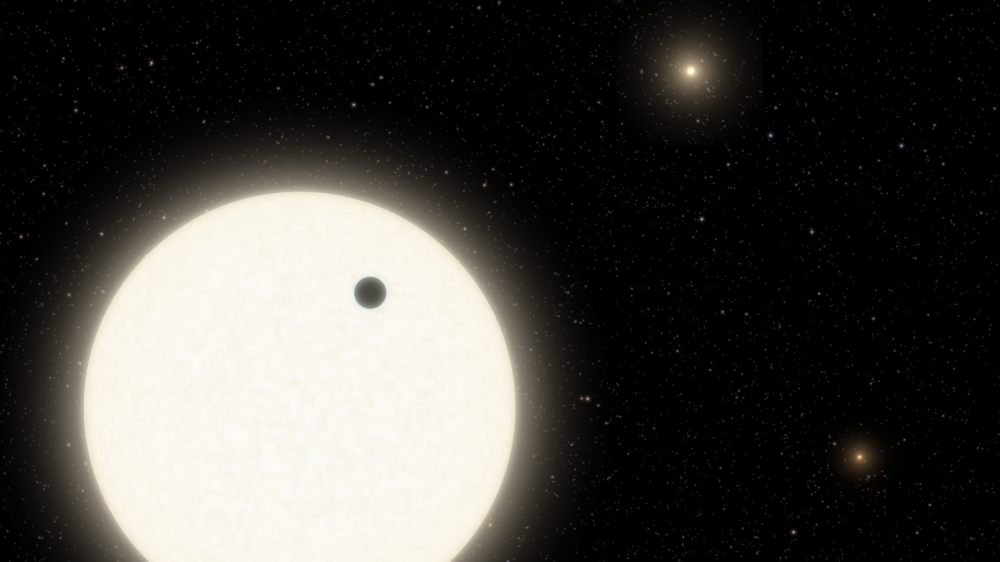

Kepler-186f, o primeiro planeta do tamanho da Terra na Zona Habitável
Imagine um mundo distante, orbitando uma estrela além dos confins do nosso sistema solar, onde as condições são favoráveis para a existência de água líquida e, talvez, até mesmo vida. Bem-vindo a Kepler-186f, o primeiro exoplaneta do tamanho da Terra confirmado em uma zona habitável.
Um marco na exploração espacial nesta primeira parte, mergulharemos na descoberta histórica de Kepler-186f e entenderemos sua importância para a ciência e a exploração espacial. Confirmar a existência de um planeta do tamanho da Terra em uma zona habitável é um salto significativo em nossa busca por um mundo semelhante ao nosso.
Mas o que sabemos sobre Kepler-186f? Embora seu tamanho seja apenas um pouco maior do que o da Terra, ainda há muito a ser descoberto sobre sua massa, composição e densidade. Estudos anteriores sugerem que ele provavelmente é um planeta rochoso, mas mais pesquisas são necessárias para confirmar essas teorias intrigantes.
Descobrindo Kepler-186: Uma Estrela Hospedeira de Possíveis Mundos Habitáveis

Kepler-186f é apenas uma parte de um sistema estelar intrigante. Sua estrela hospedeira, a Kepler-186, é uma anã vermelha localizada na constelação de Cygnus, a cerca de 500 anos-luz de distância da Terra. Nesta seção, mergulharemos nas características da estrela e exploraremos o fascinante sistema planetário que ela abriga.
Kepler-186f orbita sua estrela a cada 130 dias, recebendo apenas um terço da energia que a Terra recebe do Sol. Isso coloca o planeta na borda externa da zona habitável, onde a temperatura pode ser adequada para a presença de água líquida em sua superfície. Vamos descobrir como essas condições peculiares podem afetar a possibilidade de vida em Kepler-186f.
A sua casa, Kepler-186f: Uma Janela para a Vida Extraterrestre?
Na última parte deste artigo, discutiremos a empolgante perspectiva de vida extraterrestre em Kepler-186f e o papel dessa descoberta na busca contínua por outros mundos habitáveis.
Um novo passo na busca por vida, a descoberta de Kepler-186f abre uma porta emocionante para a busca por vida além da Terra. Com suas condições únicas e sua posição na zona habitável, os cientistas estão ansiosos para estudar Kepler-186f em mais detalhes e investigar se esse planeta pode realmente abrigar formas de vida.
Nasa e o futuro da exploração espacial

À medida que exploramos as possibilidades de vida em Kepler-186f, também devemos considerar o futuro da exploração espacial. Essa descoberta nos leva a repensar nossos métodos e tecnologias, inspirando-nos a buscar novas missões e desenvolver novas abordagens para descobrir outros exoplanetas semelhantes à Terra.
Conclusão: Kepler-186f e a Busca por Outros Mundos
Kepler-186f é um marco significativo em nossa busca por planetas semelhantes à Terra e pela possibilidade de vida além do nosso planeta natal. À medida que expandimos nossos horizontes e desvendamos os mistérios do universo, essa descoberta nos lembra que somos parte de algo maior e nos instiga a continuar a explorar e descobrir o desconhecido. veja mais sobre o tema em
http://www.nasa.gov/kepler